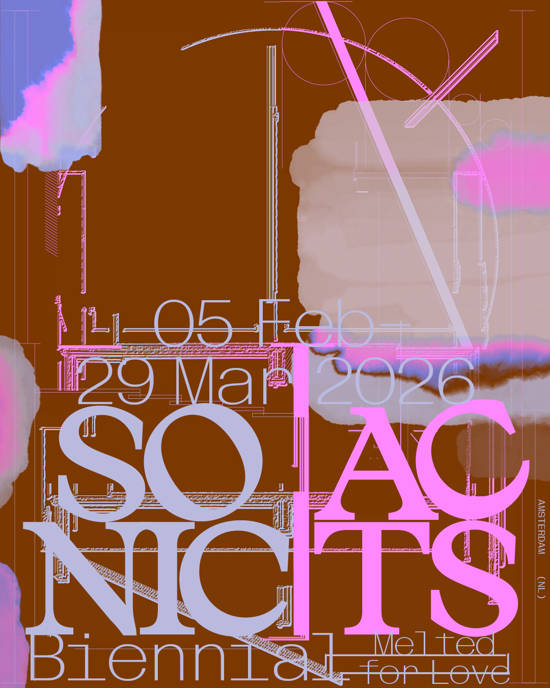

1.
Autobestuurder
Een autobestuurder uit Bombay
was een man, die alles zo dom dee
dat al het verkeer
bij het zien van die heer
maar liefst over Eindhoven omree.
Sonic Acts Biennial 2026: Melted for Love
Adelita Husni-Bey, Alina Schmuch, Bernardo Gaeiras, Diana Policarpo, Lower Levant Company, Maeve
Brennan, Olga Micińska
Een greep uit één van de vele fantastische sprookjesboeken die Thé Tjong-Khing illustreerde.
De tentoonstelling Melted for Love, onderdeel van de Sonic Acts Biennial 2026, vindt plaats in W139,
Arti et Amicitiae en de Rozenstraat en onderzoekt hoe het begrip ‘thuis’ verandert onder invloed van
de klimaatcrisis, koloniale geschiedenissen en gedwongen migratie. De tentoonstelling brengt
installaties,
films, geluidswerken en performances samen die laten zien hoe land, lichamen en ecosystemen worden
gevormd en aangetast door diverse systemen van uitbuiting. Door te luisteren naar de echo’s die deze
aantasting achterlaten, reflecteert de tentoonstelling zich op de gebaren van liefde en verbondenheid
met land en gemeenschap als vormen van verzet en herstel.
(meer...)

Word één van onze vrienden!
Evenementen
Tentoonstelling, flour water soil
24 apr—28 jun 2026 
Flour, water, soil
Geïnitieerd door Maria Khatchadourian
flour, water, soil, geïnitieerd door maria khatchadourian, is een tentoonstelling die dit voorjaar plaatsvindt in W139. Voor de tentoonstelling worden de tonratun (Թոնրատուն) – het bakkershuis – en de eeuwenoude traditie van het bakken van lavash in ondergrondse kleiovens – [Lees meer…]
Een autobestuurder uit Bombay
was een man, die alles zo dom dee
dat al het verkeer
bij het zien van die heer
maar liefst over Eindhoven omree.
Er was eens een vrouw uit Abcoude.
Die heel graag op kattenvoer kauwde.
Maar o wat een lol.
Na zes blikken vol.
Toen praatte ze niet meer, ze mauwde.
Er was eens een kaasboer uit Gouda.
Die liep rond de tafel zijn vrouw na.
De vrouw zei heel vief.
‘Alles is relatief;
als ik iets harder loop, zit ik jou na!’